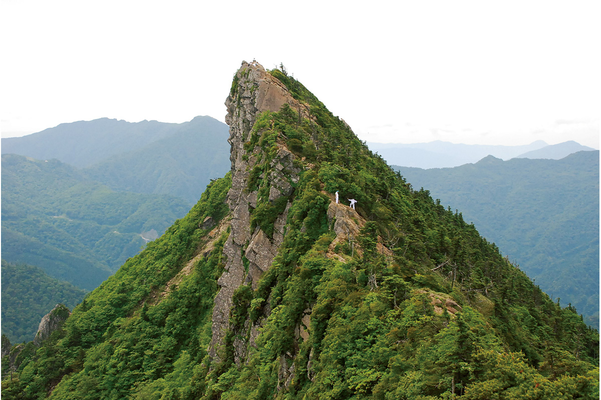
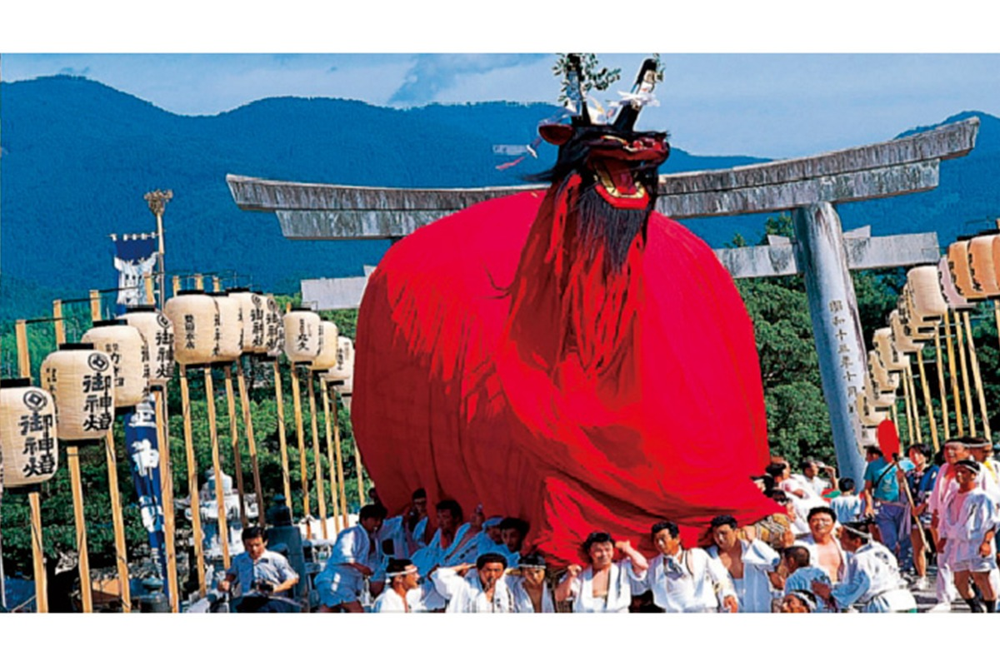
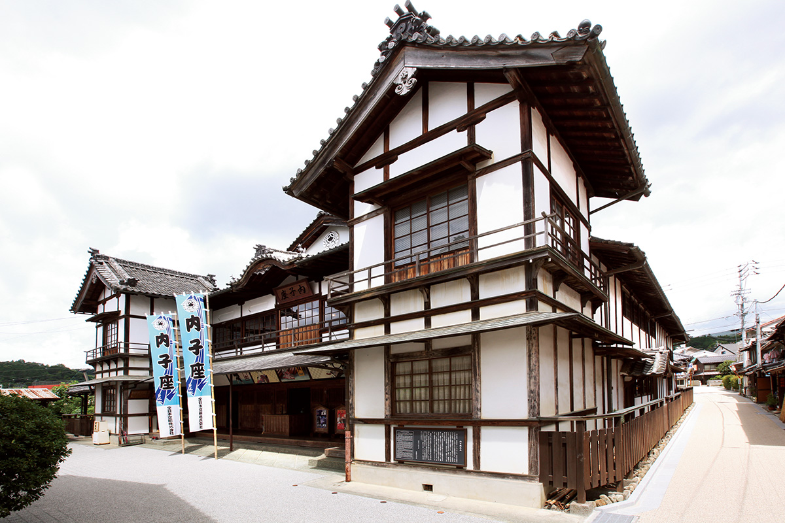
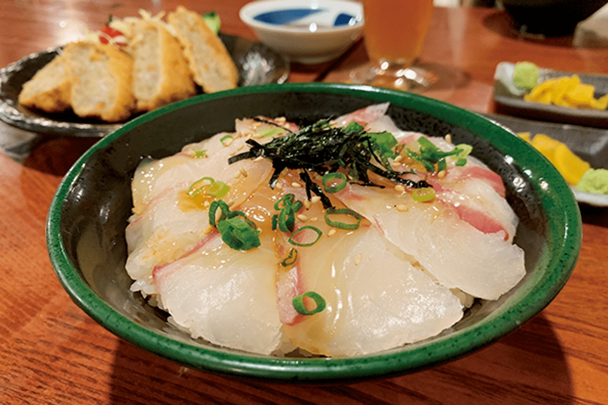
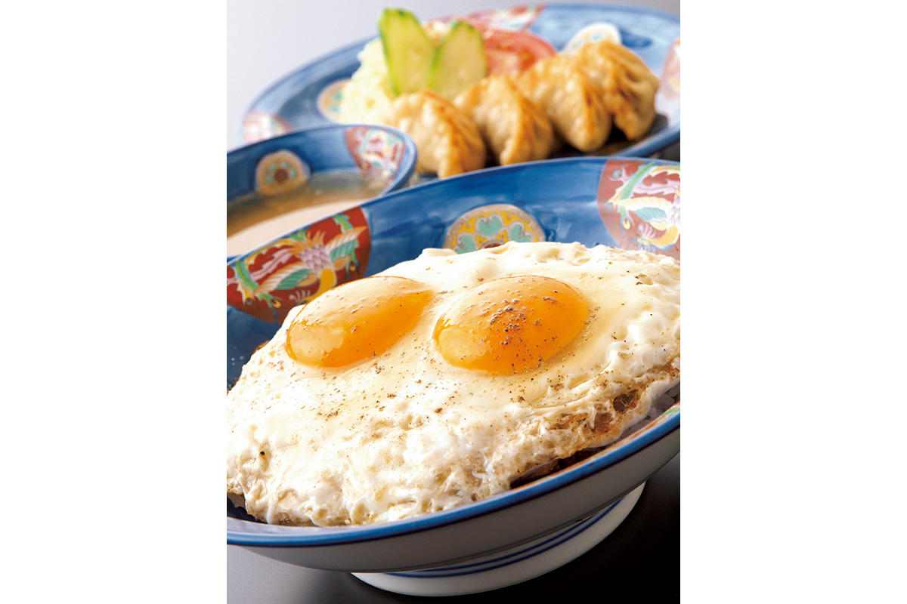
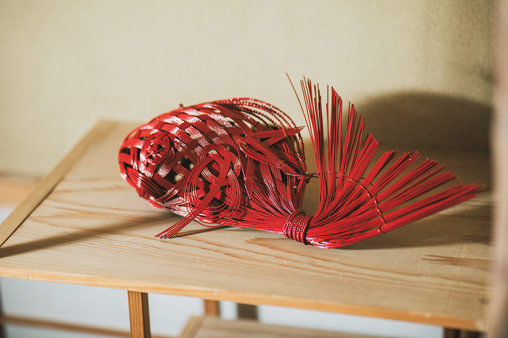
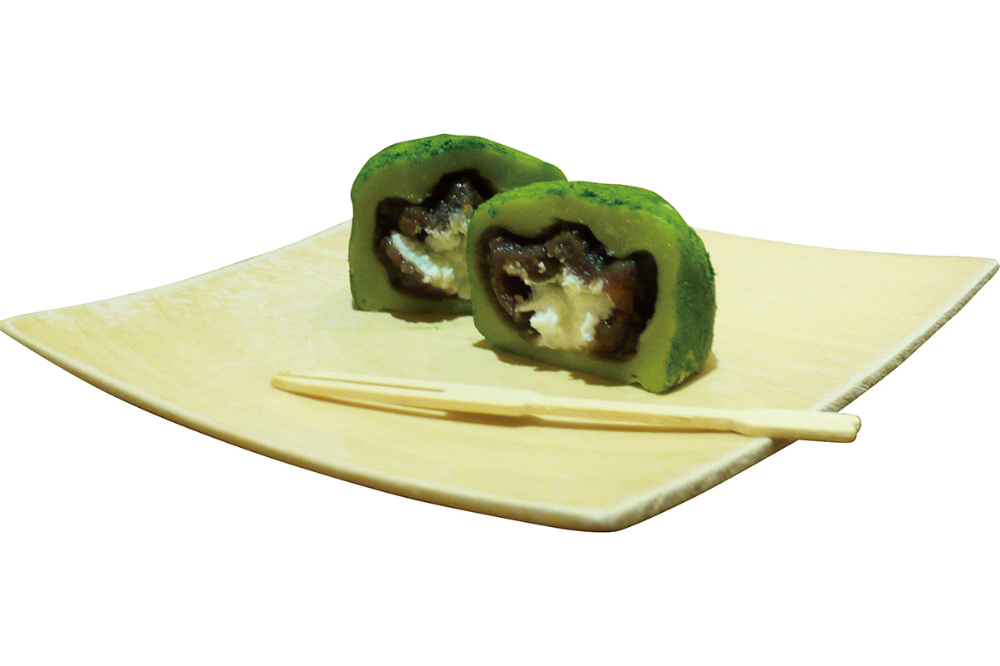
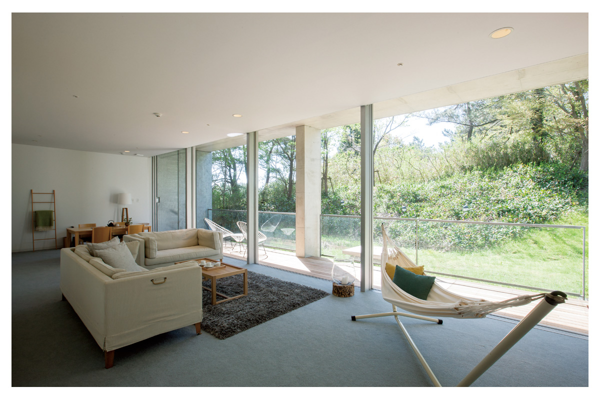

Префектура Эхимэ
Эхимэ: мандарины, самые древние онсэны и тёплое море

Скальная вершина Исидзути поднимается над зелёными хребтами: это самая высокая гора запада Японии.
Цитрусов здесь собирают больше, чем где-либо в стране, из крана в аэропорту и правда льётся мандариновый сок, а в одном из самых старых онсэнов Японии можно искупаться до завтрака. Рассказываем, за чем ехать в префектуру Эхимэ.
О префектуре
Мандариновый сок из-под крана
Эхимэ занимает северо-запад острова Сикоку. В водах Внутреннего моря Сэто и моря Ува разбросано около двухсот островов, на севере вдоль моря тянется равнина, а на юге поднимается гора Исидзути высотой 1982 метра, самая высокая на западе Японии. Береговая линия здесь тянется на 1695 километров, а на западе в море уходит полуостров Сада, самый узкий и длинный в стране.
Климат тёплый, зимой тоже много солнца, а дождей мало. Как раз поэтому здесь так хорошо растут мандарины: по урожаю цитрусовых префектура первая в стране. В аэропорту Мацуямы и в туристическом центре «Эхимэ-Айга» работает кран, из которого льётся мандариновый сок: городская легенда об этом кране оказалась правдой, и попробовать сок может любой.
Кроме мандаринов Эхимэ славится полотенцами: их делают в Имабари, на стороне префектуры, где начинается маршрут Симанами через острова Внутреннего моря. А в Мацуяме работает Дого-онсэн, самый старый онсэн Японии: о нём упоминает ещё «Нихон сёки», свод VIII века. Именно здесь разворачивается действие «Боттян», повести Нацумэ Сосэки (1867–1916), классика японской литературы.
Что посмотреть
Гора, на которую поднимаются тысячами
Гора Исидзути
Это высочайшая точка запада Японии: 1982 метра. На вершину ведут несколько маршрутов, и часть пути можно проехать на канатной дороге. Место считается средоточием силы, и летом сюда поднимаются даже те, кто в горах бывает редко.
- Телефон
- +81 897-59-0331
- Справки
- канатная дорога на Исидзути
Что ещё посмотреть
- Главное здание Дого-онсэна, тот самый старый онсэн страны в Мацуяме
- Каруст на Сикоку, известняковое плато, больше похожее на лунный пейзаж
- Усадьба Гарю-сансо, старый дом с садом на берегу реки
Праздники
Чудовище с головой демона и телом быка
Праздник усиони в Увадзиме
Усиони, то есть «бычий демон», это чудище с головой демона и туловищем быка. На празднике его огромную фигуру несут на плечах по улицам Увадзимы: в шествии участвует весь город, и это одно из самых зрелищных событий Сикоку.

- Период
- конец июля
- Место
- город Увадзима, район улиц Сакиия и Усиони-стрит
Другие праздники
- Праздник в Сайдзё, осеннее шествие с платформами в северной части префектуры
- Праздник барабанов в Ниихаме, соревнование огромных барабанов тайко
- Праздник в Мацуяме, летний городской праздник с танцами
Музеи и архитектура
Театр, который открыли в честь императора
Театр Утико-дза
Утико-дза это старый деревянный театр кабуки, то есть театра с музыкой, пением и танцем. Его построили в 1916 году к восшествию на престол императора Тайсё (1879–1926), правившего в 1912–1926 годах. Внутри сохранились сцена с помостом для выхода актёров, ярусы и квадратные места для зрителей. Осмотреть можно и помост, и пространство под сценой, где раньше работали механики.

- Адрес
- 2102 Uchiko, Uchiko-cho, Kita-gun, Ehime
- Телефон
- +81 893-44-2840
Что ещё посмотреть
- Бансуй-со, вилла начала XX века с садом в японском стиле
- Музей «Облака над холмом», музей романа Сибы Рётаро в Мацуяме
Местная кухня
Рис с сырым морским лещом поверх
Тай-мэси
Тай-мэси, то есть «рис с морским лещом», в Увадзиме готовят иначе, чем где-либо ещё. Сырые ломтики леща смешивают с соусом и яйцом и выливают на рис: получается не привычный суши-рис, а густая рисовая чаша, которую едят ложкой.

Что ещё попробовать
- Мацуяма-судзу, рассыпчатый рис с рыбой и овощами, который готовят по праздникам
- Хораку-яки, рыба, запечённая с мисо в раковине
- Дзяко-тэн, рыбные лепёшки из мелкой сушёной рыбы
Где поесть
Рис с яйцом, который придумали в Имабари
Хакуракутэн, головной ресторан в Имабари
Этот китайский ресторан открылся в 1970 году. Здесь придумали «якибута тамаго-мэси»: на рис кладут ломтики жареной свинины, заливают их густым соусом и накрывают двумя жареными яйцами. Блюдо стало местной знаменитостью и стоит 825 иен.

- Адрес
- 4-1-19 Tokiwacho, Imabari, Ehime
- Телефон
- +81 898-23-7292
- Время работы
- с 11:00 до 15:00 и с 17:00 до 22:00
- Выходные
- вторник, новогодние праздники
- Сайт
- hakurakuten.net
Ремёсла
Шнур из бумаги, который складывают в рыбу
Мидзухики марки MIMUS
Мидзухики это шнур из плотной бумаги, туго скрученный и накрахмаленный: им украшают конверты для денег и подарочные коробки. MIMUS это марка мастера традиционного ремесла из Иё, который делает из этого шнура фигуры и украшения для современного дома.

- Почта
- info@mizuhiki-mimus.com
- Справки
- объединение мастеров мидзухики Иё
Что привезти
Пирожное с чаем и сливками
Кири-но-мори дайфуку
Кири-но-мори дайфуку делают в кондитерской при чайной плантации. Маття, то есть молотый зелёный чай, добавляют в рисовое тесто моти, внутрь кладут бобовую пасту из красных бобов и сливки. Коробка из восьми пирожных стоит 1188 иен.

- Телефон
- +81 896-72-3111
- Сайт
- kirinomori.co.jp
- Справки
- кондитерская «Кири-но-мори», головной магазин в Сингю
Где остановиться
Отель, который переделали из музея
Сэтоути Ретрит Аонаги
Этот курорт устроили в здании бывшего музея: его перестроили в отель всего на семь номеров. Из части комнат видно Внутреннее море Сэто, а на ужин подают кайсэки, то есть ужин из небольших перемен, где главное это рыба и овощи.

- Адрес
- 794-1 Yanidani, Matsuyama, Ehime
- Телефон
- +81 89-977-9500
- Комнат
- 7
- Цена
- от 46 250 иен за ночь с двумя приёмами пищи, налоги и обслуживание не включены
Местный диалект
Как здесь говорят «очень вкусно»
- мэття ойсии наасиочень вкусно
- хоотоочрезвычайно, очень
- ёмо-дашутка, легкомысленный человек
- каманничего страшного
Рекорды
В чём Эхимэ первая в стране
- №1 цитрусовые: первое место по урожаю
- №2 жемчуг: первое место по производству
- №3 полотенца: первое место по производству
Вопросы и ответы
Что ещё спрашивают об Эхимэ
По какому роману назвали музей в Мацуяме?
«Облака над холмом». Это роман Сибы Рётаро о Японии эпохи Мэйдзи, когда страна строилась заново как современное государство. Музей открылся в Мацуяме в 2007 году: здесь хранят материалы, связанные с книгой.
Какое местное блюдо поэт Масаока Сики заказал для писателя Нацумэ Сосэки?
Мацуяма-судзу. Это рассыпчатый рис с рыбой и овощами, который в Мацуяме подают на праздниках и в честь гостей; есть у него и второе имя, мобури-мэси. Поэт Масаока Сики (1867–1902), уроженец Мацуямы и реформатор японского хайку, заказал это блюдо для приезжавшего в город писателя Нацумэ Сосэки. Секрет во вкусе мелкой рыбы из Внутреннего моря и чуть сладком уксусе.
Справочник
Эхимэ в цифрах
| Центр префектуры | город Мацуяма |
| Города и посёлки | 11 городов, 9 посёлков |
| Площадь | 5676 кв. км |
| Население | 1,35 миллиона человек |
| Плотность населения | 238,2 человека на кв. км |
| Туристов за год | 3,57 миллиона |
| Дерево префектуры | сосна |
| Цветок префектуры | цветок мандарина |
| Птица префектуры | японская зарянка |
| Средняя температура | +17,1 |
| Максимум | +34,4 |
| Минимум | +1,7 |
| Осадки | 1797 мм |
| Ясных дней | 33 |
| Дождливых дней | 90 |
| Снежных дней | 22 |
| Онсэнов | 36 |
| Гостиниц | 165 |
| Рёканов | 455 |
| Музеев искусств | 22 |
| Музеев | 52 |
| Митиноэки, придорожных станций | 29 |
| Национальных сокровищ | главное здание храма Тайсандзи и другие, всего 12 |
| Важных культурных ценностей | 147 |
| Исторических мест | 16 |
| Природных памятников | 12 |
| Национальные парки | Асидзури-Ува, Исидзути, всего 2 |
Природные памятники
- Котлы-выбоины Якама, круглые ямы, которые вода проточила в камне
- Камфорные деревья при святилище Оямадзуми, роща огромных старых деревьев
- Османтус при храме Одзи-риндзи, старое благоухающее дерево